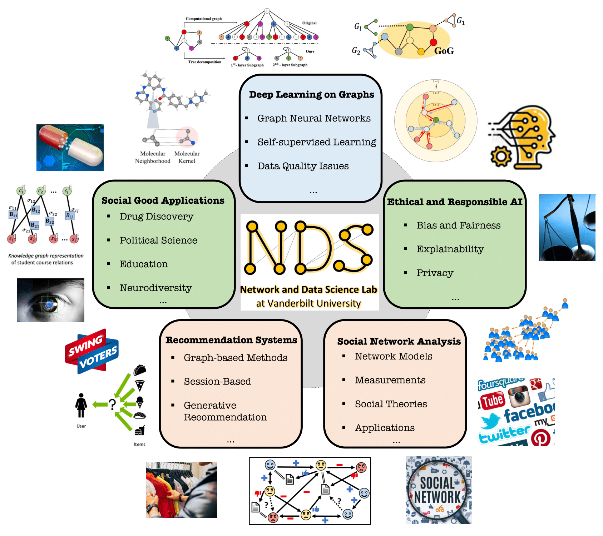

Tyler Derr
 |
Assistant Professor Network and Data Science (NDS) Lab Email: Tyler (dot) Derr (at) vanderbilt (dot) edu |
Short Bio
Dr. Tyler Derr is an Assistant Professor in the Department of Computer Science, Teaching and Affiliate Faculty in the Data Science Institute, and Faculty Fellow in the Frist Center for Autism and Innovation at Vanderbilt University. He received his PhD in Computer Science from Michigan State University in 2020 under the supervision of Dr. Jiliang Tang and was a member of the Data Science and Engineering (DSE) Lab and Teachers in Social Media (TISM) Project. He had complete his MS in Computer Science at The Pennsylvania State University in 2015 and dual BS in Computer Science and Mathematical Sciences at The Pennsylvania State University in 2013.
Tyler directs the Network and Data Science (NDS) lab, which conducts research in the areas of data mining and machine learning, with emphasis on social network analysis, deep learning on graphs, and data science for social good with applications in drug discovery, education, political science, and autism research. His PhD students received Vanderbilt's C. F. Chen Best Paper Award in Computer Science in 2022 and Runner-Up Award in 2023. He is actively involved in top conferences in his field, both in terms of publishing and serving as an SPC/PC member, while receiving recognition such as the Best Student Poster Award at SDM’19 and Best Reviewer Awards at ICWSM’19 and ’21, as well as WSDM’22. He has contributed to the organization of international conferences, including serving as the Publicity Co-Chair of KDD’22 and ’23, Doctoral Consortium Co-Chair of WSDM’22, and Proceedings Co-Chair of KDD’21. Being passionate about sharing knowledge, he has co-organized multiple workshops including Machine Learning on Graphs (MLoG) Workshop at WSDM’22 and ’23 along with at ICDM’22 and ’23; he has delivered tutorials on Graph Neural Networks at KDD’20 and AAAI’21. He serves as Associate Editor for Elsevier Big Data Research and Topic Editor in Frontiers in Big Data. Additionally, he was honored with the Fall 2020 Teaching Innovation Award from the School of Engineering at Vanderbilt University, highlighting his dedication to exceptional teaching. Tyler received the prestigious NSF CAREER Award in 2023.
Research Interestsdata mining, machine learning, mining and learning on graphs, social network anlaysis, graph neural networks, ethical and responsible AI, recommendation systems, data science for social good (e.g., drug discovery, education, political science, and autism research) [Open positions] Call for Papers
|  |
News (See past news before joining VU here)
2023
8/2023: My PhD student Yuying Zhao's KDD2023 Blog article ’'Progress and Promise for The Shifting Landscape of Gender in STEM’’ is now online
7/2023: Preprint ‘‘Fairness and Diversity in Recommender Systems: A Survey’’
6/2023: Catherine's paper ‘‘The Friendship Paradox: An Analysis on Signed Social Networks with Positive and Negative Links’’ was accepted to KDD’23 Undergraduate Consortium
6/2023: Our paper Fair Online Dating Recommendations for Sexually Fluid Users via Leveraging Opposite Gender Interaction Ratio is accepted by the MLG Workshop at KDD2023
6/2023: Honored to receive the NSF CAREER Award! News @: Vanderbilt's School of Engineering and Frist Center
6/2023: Will give an invited talk ‘‘Towards Data-Centric Graph Learning for Real-World Applications’’ at Max Planck Institute for Mathematics in the Sciences (MPI MiS)
6/2023: Preprint ‘‘NeuroGraph: Benchmarks for Graph Machine Learning in Brain Connectomics’’ with code and data publicly availabe here
6/2023: Gave an invited talk ‘‘Advanced Graph Analytics for Real-World Applications’’ in the Griffiss Institute's Tech Talks at Air Force Research Lab Information Directorate
5/2023: Congratulations to my PhD student Yuying Zhao for being awarded Vanderbilt's C. F. Chen Best Paper Runner-Up Award in Computer Science for her AAAI’23 paper ‘Fairness and Explainability: Bridging the Gap Towards Fair Model Explanations’
4/2023: Congratulations to my PhD student Yu Wang for being awarded Vanderbilt's 2023 Graduate Leadership Anchor Award for Research
4/2023: Our paper ‘‘Adversarial Attacks for Black-box Recommender Systems via Copying Transferable Cross-domain User Profiles’’ is accepted in IEEE TKDE
4/2023: Gave an invited talk ‘‘Creating and Leveraging Knowledge Graphs in Real-World Applications’’ in the Knowledge Graph Day at ACM Web Conference
3/2023: Selected for the Visiting Faculty Research Program (VRFP) of The Air Force Research Laboratory's Information Directorate (AFRL/RI) and Information Institute (II) during Summer 2023
3/2023: Our paper ‘‘ADEPT: Autoencoder with Differentially Expressed Genes and Imputation for a Robust Spatial Transcriptomics Clustering’’ is accepted at RECOMB-Seq 2023 and published in iScience
3/2023: My PhD student Yunchao (Lance) Liu's gave an (recorded) invited talk at Molecular Modeling and Drug Discovery (M2D2) organized by Mila and Valance Discovery presenting our work MolKGNN
3/2023: Our workshop Machine Learning on Graphs (MLoG) is accepted at ICDM2023 (4th iteration)
1/2023: Our paper ‘‘Collaboration-Aware Graph Neural Networks for Recommendation Systems’’ was accepted at ACM Web Conference
2023: Invited to serve as an external reviewer for Research Grants Council (RGC) of Hong Kong during 2023.
2023: Invited to serve as a grant proposal panelist for NSF during 2023
2022
12/2022: My PhD student Yu Wang was awarded The American Bureau of Shipping (ABS) Scholarship through Vanderbilt University
11/2022: Gave an invited keynote ‘‘Overcoming Data Quality Issues in Graph Learning’’ in the Knowledge Graph Workshop at ICDM2022
11/2022: Our paper ‘‘Fairness and Explainability: Bridging the Gap Towards Fair Model Explanations’’ is accepted at AAAI2023
11/2022: My PhD student Yunchao (Lance) Liu's first paper since joining NDS ‘‘Interpretable Chirality-Aware Graph Neural Network for Quantitative Structure Activity Relationship Modeling in Drug Discovery’’ is accepted at AAAI2023
11/2022: Our extended abstract ‘‘Collaboration-Aware Graph Neural Networks for Recommendation Systems’’ was accepted at Learning on Graphs (LOG) conference
11/2022: Our extended abstract ‘‘Interpretable Chirality-Aware Graph Neural Network for Quantitative Structure Activity Relationship Modeling’’ was accepted at Learning on Graphs (LOG) conference
11/2022: Gave an invited talk ‘‘Overcoming Data Quality Issues in Graph Learning’’ in AI Seminar at North Carolina State University
11/2022: Gave an invited talk ‘‘Overcoming Data Qaulity Issues in Graph Learning’’ in the Mathematics and Data Science section of Qilu Youth Forum at Shandong University
10/2022: Our paper ‘‘Degree-related Bias in Link Prediction’’ is accepted at IEEE ICDMW2022
10/2022: Gave an invited talk ‘‘Overcoming Data Quality Issues in Graph Learning’’ in the ORNL Core Universities AI Workshop at Virginia Tech
10/2022: Our workshop Machine Learning on Graphs (MLoG) is accepted at WSDM2023 (3rd iteration)
10/2021: Invited to be a judge for VandyHacks 2022 (VU's premier student hackathon)
9/2022: Our paper ‘‘THINK: Temporal Hypergraph Hyperbolic Network’’ is accepted at IEEE ICDM2022
9/2022: Our paper ‘‘Decision Boundaries of Deep Neural Networks’’ is accepted at IEEE ICMLA2022
8/2022: Our paper ‘‘Enhancing Individual Fairness through Propensity Score Matching’’ is accepted at IEEE DSAA2022
8/2022: Preprint ‘‘Interpretable Chirality-Aware Graph Neural Network for Quantitative Structure Relationship Modeling in Drug Discovery’’
8/2022: Invited to serve as Social Media and Publicity Chair of KDD2023
8/2022: Gave an invited talk ‘‘Machine Learning on Graphs’’ in the Computer Science and Mathematics Division at Oak Ridge National Laboratory
8/2022: Our paper ‘‘Imbalanced Graph Classification via Graph-of-Graph Neural Networks’’ is accepted at CIKM2022
7/2022: Preprint ‘‘Collaboration-Aware Graph Neural Networks for Recommendation Systems’’
7/2022: Invited to serve as Associate Editor for Elsevier Big Data Research
7/2022: Invited to serve as SPC member for AAAI2023
6/2022: Our paper Distance-wise Prototypical Graph Neural Network for Imbalanced Node Classification is accepted by the MLG Workshop at KDD2022
6/2022: Our workshop Privacy Algorithms in Systems is accepted at CIKM2022
6/2022: My PhD student Yuying Zhao's first paper since joining NDS ‘‘Inferring EHR Utilization Workflows through Audit Logs’’ is accepted at AMIA2022
5/2022: My research was highlighted in VU Provost C. Cybele Raver's keynote at The Vanderbilt Summit on Modern Conflict
5/2022: Our paper ‘‘Improving Fairness in Graph Neural Networks via Mitigating Sensitive Attribute Leakage’’ is accepted at KDD2022
5/2022: Our paper ‘‘On Structural Explanation of Bias in Graph Neural Networks’’ is accepted at KDD2022
5/2022: Our paper ‘‘ChemicalX: A Deep Learning Library for Drug Pair Scoring’’ is accepted at KDD2022 and corresponding open-source library is available here
5/2022: Our workshop Graph Techniques for Adversarial Acticity Analytics (GTA3) was accepted at IEEE BigData2022
5/2022: Congratulations to my student Yu Wang for being awarded Vanderbilt's C. F. Chen Best Paper Award in Computer Science for his paper ‘Tree Decomposed Graph Neural Network’
4/2022: Our workshop Machine Learning on Graphs (MLoG) is accepted at ICDM2022 (2nd iteration)
3/2022: Awarded Outstanding PC Member Award at WSDM2022 (with credit going to NDS subreviewers Yu Wang, Yuying Zhao, Yunchao (Lance) Liu, Zhaoqing Li)
3/2022: Congratulations to my student Yunchao (Lance) Liu for being awarded the Nvidia Academic Hardware Grant for his project on ‘‘Interpretable 3D Graph Neural Networks for Drug Discovery’’
2/2022: Preprint ‘‘ChemicalX: A Deep Learning Library for Drug Pair Scoring’’
2/2022: Accepted to attend the ASEE DELTA Junior Faculty Institute
2/2022: Invited to serve as PC member for WebSci2022 and Graph Learning Workshop@WebConf2022
1/2022: Our book chapter ‘‘Graph Neural Networks: Self-supervised Learning’’ is published in the new edited Springer book ‘‘Graph Neural Networks: Foundations, Frontiers, and Applications’’
1/2022: Invited to serve as SPC member for ICWSM2022
2022: Invited to serve (twice) as a grant proposal panelist for NSF during 2022
2021
12/2021: Topic Editor of Machine Learning on Complex Graph - Frontiers in Big Data
12/2021: Preprint ‘‘Imbalanced Graph Classification via Graph-of-Graph Neural Networks’’
12/2021: Introduced CS and AI topics to students at Tohoku International School through Skype a Scientist
11/2021: Invited to serve as SPC member for KDD2022
11/2021: Our workshop ‘‘Machine Learning on Graphs (MLoG)’’ is accepted at WSDM2022
10/2021: Preprint ‘‘Distance-wise Prototypical Graph Neural Network for Imbalanced Node Classification’’
9/2021: Preprint of our review on ‘‘Graph Neural Networks: Self-supervised Learning’’
9/2021: Invited to be a judge for VandyHacks 2021 (VU's premier student hackathon)
9/2021: Invited to serve as PC member for The Web Conference 2022
8/2021: Invited to serve as Social Media and Publicity Chair of KDD2022
8/2021: Invited to serve as PC member for GTA3@BigData2021
8/2021: Invited to serve as SPC member for WSDM2022
8/2021: My PhD student Yu Wang's first paper since joining NDS ‘Tree Decomposed Graph Neural Network’ is accepted at CIKM2021
8/2021: Our paper ‘Graph Feature Gating Networks’ is accepted at CIKM2021
8/2021: Our paper ‘Deep Adversarial Network Alignment’ is accepted at CIKM2021
7/2021: Our paper ‘Road to the White House: Analyzing the Relations Between Mainstream and Social Media During the U.S. Presidential Primaries’ is accepted at ACM Hypertext2021
6/2021: Awarded Best Reviewer Award at ICWSM2021
6/2021: Our paper ‘Interpretable Visual Understanding with Cognitive Attention Network’ is accepted at ICANN2021
6/2021: Invited to serve as PC member for ICLR2021
5/2021: Out paper ‘‘Graph Adversarial Attack via Rewiring’’ is accepted at KDD2021
5/2021: Invited to serve as PC member for IEEE BigData2021 and CIKM2021
4/2021: Invited to serve as PC member for EMNLP2021, IRI2021, and NeurIPS2021
4/2021: Awarded SIAM Early Career Travel Award for SDM2021 supported by NSF
4/2021: Our paper ‘‘Self-supervised Learning on Graphs: Deep Insights and New Directions’’ is accepted at SSL@WWW2021
3/2021: Invited to serve as PC member for GNNSys’21 Workshop @ MLSys’21
2/2021: Invited to serve as Doctoral Consortium Chair of WSDM2022
2/2021: I received the Fall 2020 Innovative Teaching Award from the School of Engineering
1/2021: Invited to serve as PC member for WebSci2021
2021: Invited to serve (twice) as a grant proposal panelist for NSF during 2021
2020
12/2020: Invited to serve as PC member for ICML2021
12/2020: Our paper ‘‘Stock Selection via Spatiotemporal Hypergraph Attention Network: A Learning to Rank Approach’’ is accepted at AAAI2021
12/2020: Invited to serve as PC member for ACL2021
11/2020: Invited to serve as PC member for KDD2021
11/2020: Introduced CS and AI topics to students at Ardsley High School through Skype a Scientist
11/2020: Panelist on the ‘‘Graduate School is not a Job’’ graduate recruitment event
10/2020: Our paper ‘‘Node Similarity Preserving Graph Convolutional Networks’’ is accepted at WSDM2021
10/2020: Our paper ‘‘CopyAttack: Attacking Black-box Recommendations via Copying Cross-domain User Profiles’’ is accepted at ICDE2021
10/2020: Gave an invited talk ‘‘Navigating the Faculty Job Search’’ in Michigan State's College of Engineering Graduate Lunch & Learn seminar
9/2020: Gave an invited talk ‘‘Graph Neural Networks: Social Networks and Beyond’’ in the Biomedical Engineering Department at Vanderbilt Unv.
9/2020: Gave an invited talk at Change++
9/2020: Our tutorial ‘‘Graph Neural Networks: Models and Applications’’ has been accepted by AAAI2021
9/2020: Preprint ‘‘Road to the White House: Analyzing the Relations Between Mainstream and Social Media During the U.S. Presidential Primaries’’
9/2020: Invited to serve as PC member for IJCAI2021
9/2020: Invited to serve as PC member for WWW2021
9/2020: Our paper ‘‘Understanding and Promoting Teacher Connections in Online Social Media: A Case Study on Pinterest.’’ is accepted at IEEE TALE2020
8/2020: Invited to serve as Proceeding Chair of KDD2021
8/2020: Our paper ‘‘Learning from Incomplete Labeled Data via Adversarial Data Generation’’ is accepted at ICDM2020
8/2020: Invited to serve as PC member for AAAI2021
8/2020: Invited to serve as PC member for GTA3@BigData2020
8/2020: Invited keynote at joint workshops Deep Learning on Graphs: Methods and Applications and Mining and Learning with Graphs at KDD2020
8/2020: Invited to serve as a reviewer for EAAI2021.
8/2020: Awarded KDD2020 Student Registration Award (and partial KDD2021 registation credit) from NSF and SIGKDD
8/2020: I joined Vanderbilt University and established the Network and Data Science (NDS) Lab